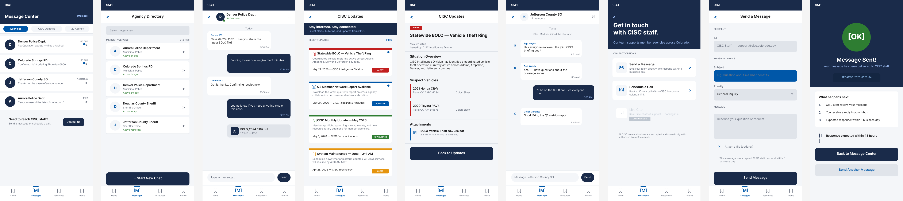

Project 01
CISC
Law Enforcement Intelligence App · Mobile Design
A mobile app prototype actively being built for the Colorado Information Sharing Consortium, enabling agencies to share intelligence, coordinate on BOLOs, access an agency directory, and message CISC staff directly. 4 live pathways, 40+ fully wired frames and growing.